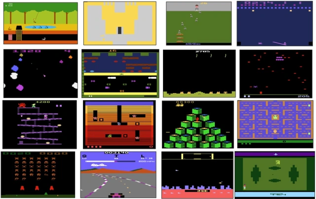

1 Intelligent Agents and Machines
1.1 Computing Machinery and Intelligence
What is intelligence? Can we build intelligence into a machine?
This idea of thinking and of being an intelligence agent is thoroughly examined by Alan Turing in his paper, published in the Mind philosophy journal, which talks about how to build these machines. His very old and interesting paper is about the Turing Test, originally called the Imitation Game, which consists in testing if a machine can actually think and reason like a human:
– I propose to consider the question, “Can machines think?” This should begin with definitions of the meaning of the terms “machine” and “think”. –
In proposing his question-answer test Turing (1950) introduced the idea through a Gender Imitation Game The experiment involves a computer and a human pretending to be the opposite gender.
In this game a human interrogator of either sex simultaneously questions two hidden interlocutors: one man and one woman. The purpose of the man is to pretend to be a woman; the woman’s task is to tell the truth. The interrogator must determine the actual woman. Replacing one of the hidden interlocutors with a machine Turing asked:
“May not machines carry out something which ought to be described as thinking but which is very different from what a man does?”
Turing quite rightly raised that question realising after WWII that man does not think like every other man; man does think like woman; an Occidental woman may not think like a woman from the Orient.
Gender is regarded as an important feature in Turing’s game by some (Copeland & Proudfoot 2008; Sterrett, 2000; Lassègue, 1996; Hayes & Ford, 1995; Genova, 1994). The contention is that both man and machine impersonating a woman provides a stronger test for intelligence. However, neither of these researchers have explained what they mean by gender nor have they provided empirical evidence to substantiate their claim.1
1.2 Intelligent Machines Evolution
However, the idea of building a mechanical machine capable of thinking –making decisions and executing operations based on a program– was originally proposed one century earlier (1850) by computer pioneer Charles Babbage with his Analytical Engine. From this invention, we progressed to modern computers: autonomous systems acting independently, on par with or even surpassing human abilities (e.g. self-driving cars).
\(\rightarrow\) 
From The Analytical Engine to Autonomous Systems.

The key point is that modern machines operate within an environment, such as a car’s physical surroundings. Within this environment, we have the agent, the self-driving car. By observing its surroundings, the agent determines the state of the world (the environment). It then takes actions and learns from experience to improve its performance.
One approach to achieving this involves trial and error learning : driving –initially in a purely random way– while receiving feedback from a human driver, enabling the system to gradually refine its behavior. The reward is proportional to the travelled distance.
Wayve experiment: Reinforcement Learning algorithm learning to drive a car.
1.3 AI Systems Mastering Games with Reinforcement Learning
As previously discussed, this module explores AI systems that interact with and operate within their environments. Without relying on logic rules, these systems learn —whether how to drive a car, how to play video games or how to walk— from the observations, the states, so from what they observe (e.g. pixels, images, etc.). These algorithms are driven purely by reinforcement learning, without any human data, guidance or domain knowledge.
- Input: the pixels and the reward (e.g. game score).
- Goal: learn how to drive/play/walk from scratch, with no prior knowledge.
The systems learn through trial and error, balancing exploration and exploitation to refine their behaviour over time.
Ms. Pac-Man
For example, in Ms. Pac-Man, we wouldn’t know which character is a ghost, which one is Miss Pac-Man, or where the cherry is. Instead, we learn everything simply by analyzing the pixels on the screen.
Atari 2600 games
Atari games were solved with Deep Reinforcement Learning (DRL) using a method called Deep Q-Network (DQN), which was introduced by researchers at DeepMind in 2013 (and a more detailed version of the research was later published in the Nature journal in 2015). This approach revolutionized the way AI systems could learn to play video games.

210 \(\times\) 160 pixel image frames with 128 colours at 60Hz.
https://youtu.be/rFwQDDbYTm4?si=ozHD2X8AwNt398xw
The game of Go
The game of Go was solved in 2016 using Deep Reinforcement Learning as well, but in a more sophisticated manner compared to Atari games. This was achieved by DeepMind’s AlphaGo and its subsequent versions (AlphaGo Zero, AlphaZero), which used a combination of Deep Neural Networks and Reinforcement Learning techniques to master the game.
\(19 \times 19\)

Configurations of Go.
The AlphaGo paper is particularly intriguing because Go is an exceptionally complex game. Played on a \(19 \times 19\) board, where each tile can be empty, white, or black, the total number of possible valid configurations —possible states— is approximately \(10^{170}\), excluding impossible ones. And given that the number of atoms in the observable universe is \(10^{80}\), this highlights the immense complexity of that game: there are more configurations of Go than atoms in the universe.
In AlphaGo, the model was pretrained using experience from previous games.
In contrast, AlphaGo Zero learned to play Go entirely from scratch (“tabula rasa”“), without any prior knowledge of the game —similar to how it approached Atari games. Despite this, it quickly achieved superhuman performance, discovering solutions and completely novel ways of playing never saw before.
StarCraft
In 2020, DeepMind achieved a major AI breakthrough by mastering StarCraft using only pixel-based input. This is an especially complex game, as it requires strategic planning and coordination between multiple agents within the system. AlphaStar, DeepMind’s AI, went on to compete against top human players, winning high-level competitions and demonstrating superhuman performance.

https://youtu.be/6EQAsrfUIyo?si=gUXbT-NVSvlvSco6
Poker
AI has made significant breakthroughs also in poker, a game that is particularly challenging for machines due to its incomplete information, meaning players don’t have full knowledge of the game state (unlike chess or Go).
DeepStack was a groundbreaking AI developed by the University of Alberta, Charles University, and Czech Technical University. It was the first AI to beat professional human players in heads-up no-limit Texas hold’em.
1.4 Real-World Applications of Agentic Systems
Reinforcement learning algorithms can be described as decision-making algorithms or agentic systems, as they are designed to autonomously make decisions and take actions based on their environment. Let’s see some real-world applications of them.
ü¶ø Robotics: Learning how to walk
One of the most fascinating applications of reinforcement learning in robotics is enabling machines to walk autonomously. Instead of being programmed with predefined motion rules, these AI-driven systems learn purely from experience. By receiving only sensor readings —such as joint positions and balance data— the robot explores and refines its movements through trial and error.
A great example of this can be seen in DeepMind’s research, where an AI-controlled robot learns to walk from scratch. With no prior knowledge of physics or locomotion, the system gradually discovers stable and efficient ways to move, adapting dynamically to different terrains.
https://youtu.be/gn4nRCC9TwQ?si=Sw2HOFkXfOHQf4Qc
⚡️ Cloud Farms: Optimizing Energy and Load Distribution
Agentic systems are widely used in cloud farms to optimize resource management. Through reinforcement learning, these systems can learn how to minimize energy consumption and efficiently distribute workloads across different processors.
The idea is to enable the system to continuously adapt and make decisions in real time, balancing energy efficiency and performance. By learning from the environment and adjusting its actions accordingly, the system can find the optimal distribution of tasks while reducing power usage, thus improving both operational efficiency and sustainability.
üí® Wind Turbines: Boosting the Value of Wind Energy
Reinforcement learning is also used to optimize the orientation of wind turbines, ensuring they adjust dynamically to maximize energy production. By continuously learning from wind patterns and environmental conditions, RL algorithms enhance forecastic accuracy, improving both efficiency and sustainability.
Source: https://deepmind.com/blog/article/machine-learning-can-boost-value-wind-energy
üîã Android: Enhancing Battery Life and Display Performance
Modern smartphones rely on AI to optimize user experience, and reinforcement learning plays a key role in making Android devices smarter and more efficient. By continuously adapting to user behavior, reinforcement learning helps improving power management and display settings, leading to better performance and energy savings:
Adaptive battery: used to learn and anticipate future battery use.
Adaptive brightness of the video: algorithm learns preferences in terms of brightness from the user.
These AI-driven optimizations enhance battery life and display performance, providing a seamless and energy-efficient user experience.
üí¨ LLMs: Reinforcement Learning for Generative AI
Reinforcement learning is at the core of many groundbreaking AI advancements, driving a multi-trillion-dollar revolution. Actually, besides robotics and game-playing AI, reinforcement learning plays a key role in training large language models (LLMs).
Therefore, we’re entering this Brand New Wold 2 of agents that are based on foundational models and this is really changing everything (referring to the launch of Chat-GPT in 2022). Sparks of Artificial General Intelligence (i.e. general purpose AI) refers to the early signs that artificial intelligence is reaching human-like capabilities (or even more), such as general reasoning, autonomous learning (making decisions), and adaptability to different tasks. This expression became popular after the Microsoft Research paper titled “Sparks of Artificial General Intelligence: Early experiments with GPT-4”, in which researchers suggested that GPT-4 exhibits some characteristics that could be considered precursors to AGI (Artificial General Intelligence). However, the model is not yet a true AGI but rather a step in that direction.
The Brave New World
These foundational LLMs are trained using reinforcement learning in various ways. One key approach is Reinforcement Learning from Human Feedback (RLHF):
It involves human preferences, where either humans or machine-generated feedback (known as distillation, such as DeepSeek using GPT-4) helps optimize outputs. A common method for this is Direct Preference Optimization (DPO), which fine-tunes models based on ranked feedback.
Even more effectively, instead of relying on direct human feedback for every interaction, we can build a model of preferences —trained on responses from a large number of people— to encapsulate human preferences and guide model training more efficiently.
General picture
1.5 Intelligent, Adaptive and Autonomous Agents


 \(\Rightarrow
\begin{bmatrix}
1 & 0 & 0 & 0 \\
0 & 0 & 0 & 0 \\
0 & 0 & 0 & 0 \\
0 & 0 & 0 & 2
\end{bmatrix}\)
\(\Rightarrow
\begin{bmatrix}
1 & 0 & 0 & 0 \\
0 & 0 & 0 & 0 \\
0 & 0 & 0 & 0 \\
0 & 0 & 0 & 2
\end{bmatrix}\)
Gridworld.
Source: Shah, H., & Warwick, K. (2016). Imitating Gender as a Measure for Artificial Intelligence: - Is It Necessary?. In Proceedings of the 8th International Conference on Agents and Artificial Intelligence - Volume 1: ICAART (pp. 126-131). SCITEPRESS. https://www.scitepress.org/papers/2016/56739/56739.pdf↩︎
Term taken from Aldous Huxley’s novel to indicate something completely new.↩︎